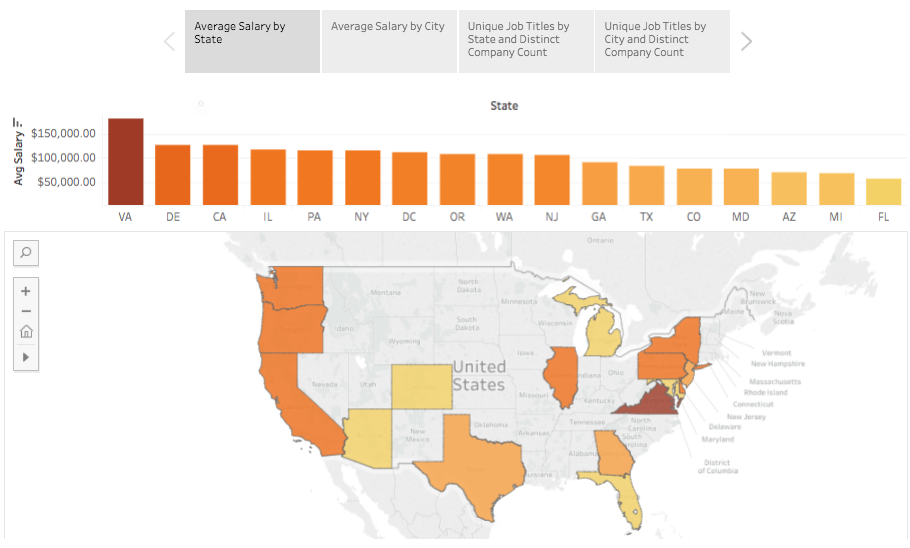
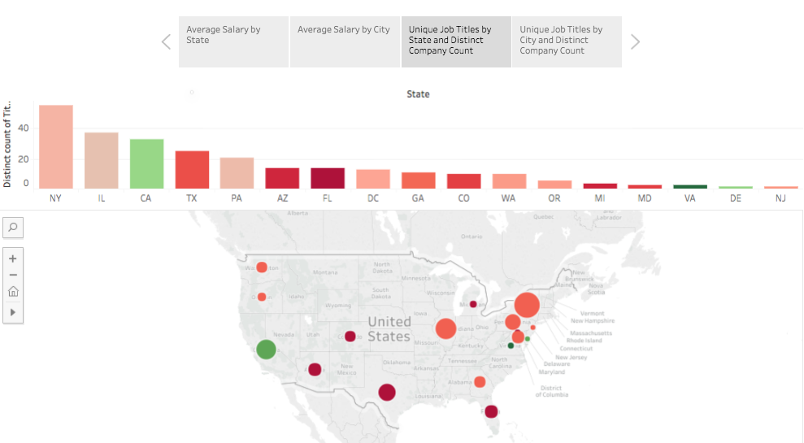
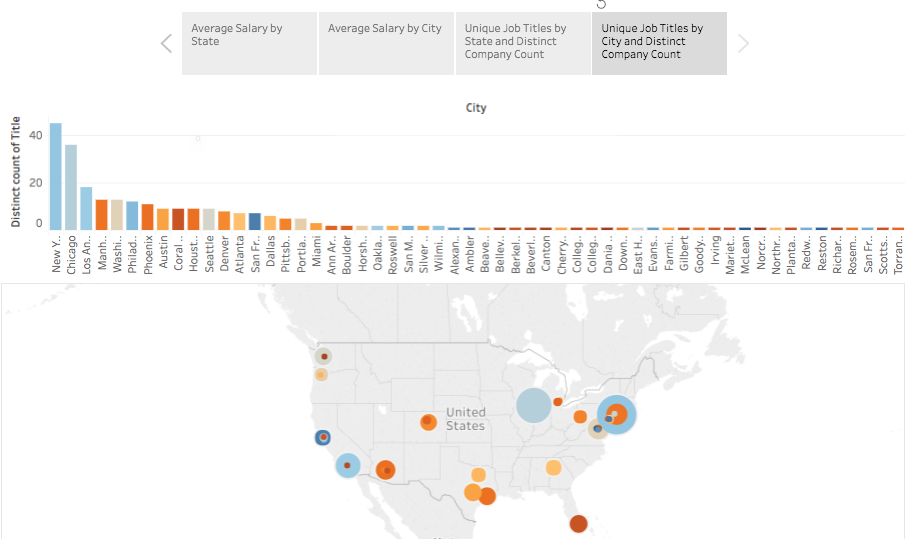

Data science has been receiving quite a bit of media attention for being one of the best fields to get into. However, because of the diversity of roles in the field, there can be quite a bit of variety in job titles, responsibilities, and qualifications. For people looking to get hired as data scientists, there are many factors to consider when job-hunting, but salary is definitely a big one. For this analysis, I built a webscraper to collect data science job listings from Indeed.com across 16 U.S. cities. After collecting over 10,500 listings, the database was then reduced to only include positions that listed annual salaries. The final dataframe of 493 observations was then assessed to determine a median salary. Several classification models were employed to determine what key factors (including location, key words, and job title) affected a job being above or below the median salary.
When determining whether a job would be above or below the median, a significant factor included whether or not the job title included the terms "Machine Learning" or "Engineer". Further analysis showed that the city where the job is located, as well as the seniority of the role, weighed heavily on whether or not a position paid above median salary. The model developed can be used to test potential job postings to predict with 85 percent accuracy, whether the salary associated with the position should be above or below the median.